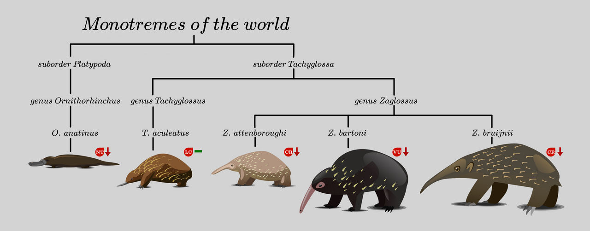

Monotremes
Their aren't many species of montremes
Monotremes are a rare and ancient group of egg-laying mammals that retain several primitive traits while still possessing key mammalian features, such as producing milk for their young. They are represented by only five living species the platypus, the short-beaked echidna, and three species of longbeaked echidna found in New Guinea.
Monotremes have distinctive characteristics, including a leathery egg, a single opening called a cloaca for excretion and reproduction, and a highly specialized sense of electroreception in the platypus. Despite their small number, monotremes provide valuable insight into early mammalian evolution.

This way to main page
back to mammals